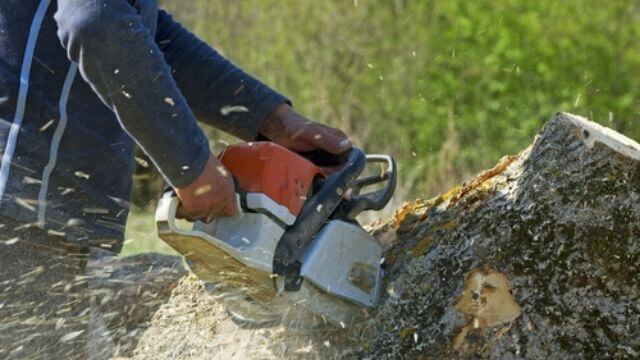

Tree Service in Pocatello ID
Safe Tree Removal, Trimming, and 24/7 Emergency Care. Locally Owned & Fully Insured.
Tree Service Near You !
If you’re looking for the most reliable tree service in Pocatello, ID , you’ve found the local experts. At Pocatello Tree Service, we specialize in high-hazard tree removal , expert tree trimming , and comprehensive arbor care designed to keep your property safe and beautiful.
Whether you have a storm-damaged limb threatening your roof or need routine pruning to maintain your curb appeal, our licensed and insured crew provides the rapid response and professional results Pocatello homeowners trust.
Don’t risk your property with a “guy and a chainsaw”—choose the local team with the equipment and expertise to get the job done right the first time.
For years, Pocatello Tree Service has provided precision tree removal, expert tree trimming, and emergency arbor care to homeowners throughout the Gate City, Chubbuck, and surrounding Bannock County areas. As a dedicated service area business, our mobile crew brings specialized rigging and safety equipment directly to your property, ensuring top-tier care without requiring a brick-and-mortar office visit.

Why choose Pocatello Tree Service?
Professional Experienced Staff
There are a lot of tree service companies in the Pocatello , Idaho area but only a few chosen ones really employ professional and experienced staff to do a wide array of tree related services like us here at Pocatello Tree Service.
What we mean by experience is that our crew knows how to take advantage of the up-to-date techniques employed to work on tree services either for residential areas or commercial spaces and make sure to use only advanced, safe, and efficient tools and equipment.
All in all, our crew possess multiple decades of experience between them and we know how that is valuable when it comes to doing this job responsibly. Tree removal may sound like a mundane task for anyone but for us, it’s a job we do with pride and passion. The service we provide will reflect what we are about.
Customer Satisfaction
We always have the satisfaction of our customers in mind. That’s why we do what we do with so much dedication and passion. There are a lot of reasons why we need to remove or trim those trees. Most of the time, they can already pose a dangerous risk to our surroundings and the people in the area so we need to take care of them and responsibly in the process.
With our expertise, we always make sure to get the job done the right way to ensure that we go above and beyond exceeding the expectations of our clients.
Affordable Price
Given that we do our job with professional experience, then it’s only natural that we do it with utmost efficiency. We don’t waste time, resources, nor energy do to our jobs satisfactorily.
That’s why we can offer inexpensive tree service around the Pocatello, Idaho area to begin with. Knowing what to do at the right place and at the right time ensures that every move we make is the right step towards accomplishing our goals.
All of our tree related services are offered at a reasonable price and done only by experts.
Residential & Commercial Tree Service
We understand how different spaces require a different approach when it comes to tree removal or trimming services. This is also true when it comes to the other services we offer like tree stump removal or grinding among others.
Whether you need a residential tree removal service or commercial tree removal service, We will be there to help you every step of the way. And of course, we do our job with the safety of everyone involved in mind.
We know how challenging tree removals can be and without the right tools, it’s not really advisable that inexperienced individuals go ahead and DIY this kind of job. So, let us take care of it for you! Contact us now so we can check out your home or business space and get working right away!
Why is it necessary to pick a quality tree service company?
The same reason why we go to the best physician if we fall ill. The same reason why we go to the best contractor if we need something fixes. We also need to make sure that need the best tree service in Pocatello, Idaho to take care of all our tree related problems.
As mentioned, tree removal services may sound mundane, but it’s not. It’s actually pretty challenging if inexperienced individuals will have to deal with it. Seasoned tree specialist already knows what to do and what approach to take in a lot of tree removal situations. So, if you pick a good quality tree service company then you save not only money but also valuable time and resources.
Our Professional Tree Services
We offer comprehensive residential and commercial tree services in the Bannock County area.

Tree Removal
Tree removal may very well be the most in-demand service that we offer. That’s why when it comes to tree removal, we’re always on top of our game. There’s not a lot of trees and not a lot of situations that we’ve worked and successfully extracted. It’s second nature to our crew and we do it fast and efficiently. We will be sure to remove those trees that are already becoming dangerous for the surrounding area. We can safely leave the stump behind or remove it as well in the process, it’s up to you. Call us now, and we will do a careful analysis of what needs to be done!
Learn MoreTree Trimming
Tree removal may have a specific set of steps to do it successfully and efficiently. But tree trimming is very different from it. Tree trimming is much more delicate, requires a lot of attention, and needs our expertise to be done the right way. You see, when you trim trees you need to make sure that you don’t damage them by, for example, cutting healthy buds accidentally for that will affect their growth moving forward. The bottom line is our crew knows how to cut any type of tree whenever needed. Every tree is unique and so it should be taken care of the right way. We must be wary of the species and the characteristics of the said tree that we are about to work on. Just so we don’t mess it up and it can continue to grow as it should. Our tree trimmers in Pocatello Idaho offer the best services.
Learn MoreStump Grinding
The grinding and removal of tree stumps is another service that needs to be done carefully, methodically, and properly. Tree stumps can prove to be a liability whether in your backyard or commercial spaces so we need to make sure to remove them properly and not damage any property in the process making sure that the area won’t be a mess.
We only utilize the right tools for the job and can get it done fast and properly.
Learn More
Cabling & Bracing
If you think there’s a tree or trees in your property that are no longer in the right or safe condition then it’s time to call us for our expert tree cabling and bracing services.
Storm incoming? Or maybe you just need to keep it steady for a while until you get the chance to get it removed? That’s right, call us! Your safety is our priority and the best way to protect yourself, your family, and the people around the area are to let professionals do some cabling and bracing. This is also to make sure to protect your property.
Learn More
Shrub Removal
A good shrub anchors the soil around your foundation, and also makes your yard beautiful. A property with an excessive number of shrubs can hinder the flow of pedestrians and their visibility.
A densely grown shrub can obstruct access to your lawn and property. The growing size of shrubs with central trunks can eventually outgrow them and they will need to be replaced. As a consequence, it is essential that you hire professionals to remove the shrub.
Learn MoreEmergency Services
Need a tree removed right this very moment? Don’t worry if it’s the middle of the night or any time of the day! We got you. Call us for any emergency tree services, we are at your disposal 24/7.
Learn MoreWhy Pocatello Property Owners Trust Us
Providing Southeast Idaho with a safer, cleaner, and more reliable arborist service.
Arborist Expertise
We know the unique structural guidelines needed to keep local Siberian Elms, brittle Cottonwoods, and Maple trees standing strong against winter ice and windstorms.
$2M Insurance Cover
Rest easy. Our work is fully insured and licensed for public and private property safety. We maintain absolute compliance with ban-county safety rules.
Impeccable Cleanup
No branches, sawdust, or ruts left behind. We use protective mats for heavy machinery and clean your lawn thoroughly after every project.
Residential And Commercial Tree Service:
Whether it’s for your home or business no matter the number of trees we will work on, we got you covered. We know how our home should be safe from all sorts of dangers and in this case dying or withered trees, so we are here to help. We also know how important it is to keep your clients and customers safe in your place of business so we will be there to either remove or trim those trees. And trust us, we will make sure that both properties will still look their finest.
About Pocatello, Idaho :
The city of Pocatello is a small, suburban city in Idaho. Its population, according to the US Census Bureau, is about 55,000 people. A famous water feature in Pocatello is the Portneuf River. For more information about Pocatello, Idaho, visit Wikipedia .
Get Your Free Local Tree Service Estimate
Fill out the form to request a free site visit. Our arborist will evaluate your trees, assess potential hazards, and provide a clear, transparent cost breakdown.
info@treeservicepocatelloidaho.com
208-417-7993
*Serving Pocatello, Chubbuck, Blackfoot, and surrounding Southeast Idaho communities.
Read What Our Clients Say
Real reviews from local property owners in Southeast Idaho.
"In our yard, we have a huge elm tree, and in our backyard, we have a giant cottonwood that is trimmed by this company. I found them to be extremely knowledgeable and friendly. It was wonderful to watch the clean-up! I think it looked better than when the first group arrived! This tree service is certainly one we would recommend."
"This Tree Service company has awesome service. I was devastated by the removal of a very large tree, which was located right next to my house. It was an extremely competitive and fair bid. Their arrival was on time and as planned (even early!). I was impressed by the whole crew. Very hard workers and very safe as well."
"My business will always be with this tree service company. It was hired to trim a number of large trees in my backyard. The extremely large trees on my property needed a lot of attention. To make my trees healthy and safe, I asked them to do whatever was needed. It was discovered there were several dead limbs that had a lot of potential for damage come winter. Just as I wanted, I received perfectly trimmed trees that were safe and healthy."
Serving the Greater Pocatello Area
We are proud to be the first choice for tree services throughout Pocatello and the surrounding communities . Our crews are active daily in your neighborhoods, providing expert care to ensure the safety and beauty of our local landscape. Whether you need an emergency removal after a South Idaho windstorm or routine seasonal pruning, we serve every corner of the Gate City, including:
Highland
Expert tree trimming and maintenance for the beautiful properties in the Highland area .
University Area
Professional arbor care tailored to the unique landscapes surrounding Idaho State University .
Indian Hills
Safe, high-hazard tree removal services for the residential hillsides .
Johnny Creek
Comprehensive tree health assessments and pruning for the Johnny Creek community .
Chubbuck & Beyond
We also provide full-service tree care to our neighbors in Chubbuck , Blackfoot , and American Falls .
Frequently Asked Questions
Common questions about our tree services in Pocatello.
On average tree removal and other related services could cost around $500. Don’t worry, we provide one of the most reasonably priced tree services in Pocatello so call us now for your free estimate!
Certain factors make tree removal a bit expensive. One is that when a tree is very large so it would be cheaper to trim it. The second reason factor is when a tree is near any property because we need to safeguard the said property in the process of removing a tree.
No matter your decision, we can work around it and find the best solutions. A tree should be removed for so many reasons. When it’s hollow when it shows signs of infections, or if there are any visible defects on its roots. Don’t worry, we can analyze it and tell you the best course of action for your problem.